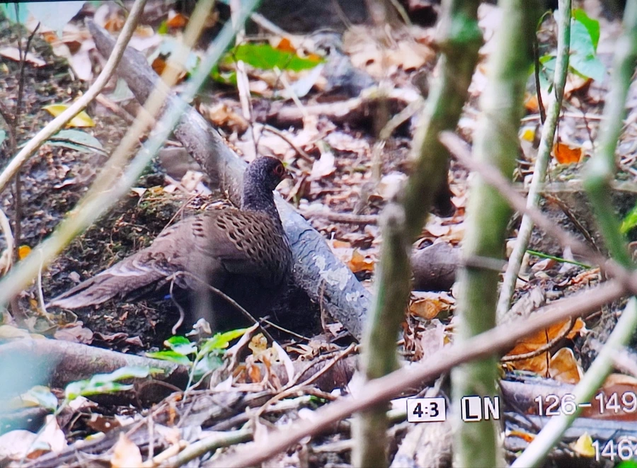

鸟类 · 动物界
眼斑孔雀雉 Polyplectron germaini

分布于越南与柬埔寨森林的雉类，灰褐色羽毛上点缀蓝绿色金属眼斑，雄鸟尾羽展开时如一片缀满宝石的扇面。
- 分类
- 门脊索动物门纲鸟纲目鸡形目科雉科属孔雀雉属
- 栖息环境
- 越南中南部与柬埔寨东部的常绿阔叶林、次生林及林下灌丛
- 地理分布
- 东南亚的越南中南部和柬埔寨东部
- 保护级别
- IUCN 近危（NT）
物种志
眼斑孔雀雉体长 56–60 cm，体重约 0.5–0.7 kg。通体灰褐色并密布细纹，背、翅和尾羽上排列着蓝绿色金属光泽的眼状斑，每枚眼斑外围有黑色与浅色环纹；雄鸟头顶有短冠羽，面部裸皮红色，雌鸟体型较小，眼斑不明显。
它们栖息于越南中南部与柬埔寨东部的常绿阔叶林和次生林，多在林下植被茂密、落叶层厚的地方活动，受惊时善于奔跑而不轻易起飞。清晨和傍晚觅食，食物包括果实、种子、昆虫与小型无脊椎动物。繁殖期雄鸟会竖起尾羽、展开双翅，把成排的眼斑展示给雌鸟；每窝产卵约 2–4 枚。由于低地森林被砍伐和狩猎，其种群数量下降，被列为近危物种。
形态与习性
- 食性果实、种子、昆虫和小型无脊椎动物
- 体长56–60 cm
- 体重约 0.5–0.7 kg
- 繁殖每窝约 2–4 枚
- 特征灰褐羽色，背翅布满蓝绿色金属眼斑
- 习性善奔跑，受惊时多步行逃入灌丛
趣味知识
- 它每根尾羽上都有蓝绿色的眼斑，展开时像一把镶满宝石的扇子。
- 眼斑孔雀雉是越南和柬埔寨低地森林的特有鸟类，分布区十分有限。
- 雄鸟求偶时会把尾羽竖成扇形，同时发出低沉的叫声。